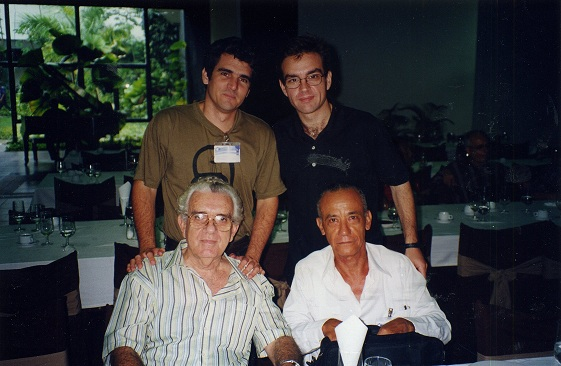
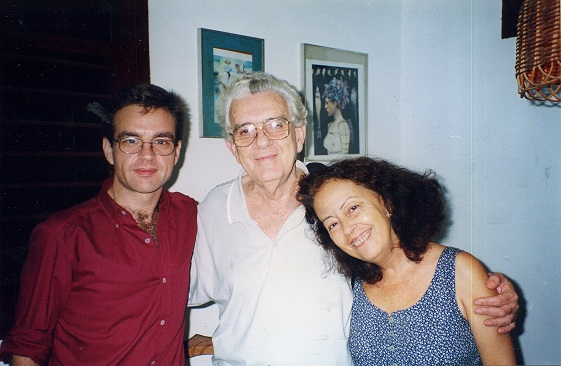

Pablo Pacheco López
y la persistencia de la cultura rebelde
Néstor Kohan
(Cátedra Che Guevara – Argentina)
Cuando falleció Antonio Gramsci y pudieron recuperarse, por fin, sus célebres Cuadernos de la cárcel se tejieron mil anécdotas, un millón de análisis e incontables estudios sobre las lecturas del brillante pensador marxista. Pero tuvieron que pasar muchos, quizás demasiados años, para investigar: ¿Cómo obtuvo Gramsci sus libros en la cárcel? Recién allí emergió a la palestra el nombre de Piero Sraffa, que todo el mundo conocía por sus trabajos de economía política neoricardiana y su vínculo académico con Keynes, pero casi nadie sabía de su adhesión juvenil al marxismo y su solidaridad cotidiana, inquebrantable y sostenida con su amigo comunista prisionero al que le proporcionó libros y más libros durante años y más años…
Cuando aparecieron en 1932 il Manuscritos económico filosóficos de París de Karl Marx (hasta entonces inéditos) se armó un revuelo bárbaro. Treinta años después, el revuelo se convirtió en polémica internacional. Todos opinaban, desde el Che Guevara hasta los teólogos jesuitas de la Iglesia oficial del Vaticano, pasando por la socialdemocracia, los psicoanalistas freudianos, toda la gama de herejes y ortodoxos del marxismo, incluyendo las más altas cumbres de la filosofía del siglo XX: desde Sartre a Lukács. Pero casi nadie se preguntaba: ¿quién rescató del olvido ese texto fundamental de Marx? ¿Quién trabajó esos manuscritos y los editó con paciencia de hormiga? El nombre de David Riazanov (seudónimo de David Goldenbach) solo es conocido por algunos pocos especialistas y eruditos del marxismo y si se lo conoce, es principalmente por su biografía de Marx y Engels, no tanto por su trabajo silencioso de editor en las sombras y ratón incansable de biblioteca sin cuyo esfuerzo hoy no conoceríamos esos pensamientos de Marx.
Los ejemplos podrían multiplicarse al infinito. Apellidos célebres y nombres desconocidos. Pensadores “famosos” y editores que han trabajado casi en el anonimato y la oscuridad, detrás de escena, para el triunfo de las ideas revolucionarias, socialistas y comunistas. Y si hasta ahora no se consiguió el triunfo, al menos su trabajo resultó imprescindible para encarar la batalla de ideas, sin la cual ninguna guerra de clases se gana en la historia.

El compañero cubano Pablo Pacheco López, además de amigo entrañable, era (ES) precisamente eso. Un ratón erudito de biblioteca, un trabajador y organizador de la cultura detrás de escena, un editor sistemático en la sombra y un rebelde de la cultura revolucionaria comunista internacional. Humilde hasta el límite de la exasperación, de perfil bajo, de hablar bajito, pausado y reflexivo, de sonrisa irónica y caminar cansino, Pablo Pacheco navegaba entre los libros como en su hábitat natural. Su oxígeno era el papel y la tinta. Tenía una biblioteca personal impresionante. Cada estante de su casa albergaba en doble fila los ejemplares más increíbles. Las joyas más preciadas, las ediciones más inesperadas. ¡Todas leídas y transitadas! Cualquier libro que uno sacaba con dificultad del estante más alto e inalcanzable… estaba leído. Los libros no eran para él un adorno, sino su alimento y su sangre, su impulso de vida.
Militante y revolucionario comunista de partido, organizado y disciplinado, al mismo tiempo albergaba y cobijaba las herejías más diversas. Pensando en voz alta se me ocurre que Pablo Pacheco sintetizaba lo mejor de la cultura revolucionaria cubana, con esa rara mezcla de ortodoxia y herejía, que en cualquier otro país del mundo estallaría en mil pedazos por sus contradicciones antagónicas pero que en Cuba convivían de modo armonioso muchas a veces y no poco tensionado algunas otras.
En la conversación cotidiana Pacheco escuchaba más que hablaba. Aunque sabía muchísimo de los temas más variados, prefería aprender y tener la oreja abierta a las opiniones propias y ajenas. Siempre en sus charlas, como un viejo sabio oriental (seguramente se reiría mucho si leyera esta frase) decía algo como lo siguiente “sobre este tema yo me he leído estos tres libros, ¿tú qué opinas de esas tesis?”. Como los viejos Sócrates o Paulo Freire, acompañaba la enseñanza-aprendizaje desde la pregunta. Y los libros que se había leído eran los mejores, del tema que fuera. En su cabeza no había “libros prohibidos” (no quiero hacer la lista porque sería demasiado larga). Como al pasar y haciéndose el distraído, la conversación terminaba siempre así “si puedes, lee tal libro, te lo recomiendo” y en seguida cambiaba de tema… Una manera sencilla, amena, para nada petulante ni soberbia de enseñar, de orientar, de invitar a la lectura y al estudio, pero sin asumir la pose del profesor sabelotodo. Sino con una humildad a prueba de balas. Sabiendo que estaba investigando sobre historia latinoamericana, el último libro que me recomendó fue una biografía sobre Simón Bolívar de Indalecio Liévano Aguirre (“es la mejor que yo he leído”, recuerdo que me dijo). Cuando tiempo después le transmití mis opiniones sobre el libro, me volvió a dar argumentos. Siempre masticaba una y otra vez sus tesis.
Y al recomendar libros, no sólo enunciaba o sugería. Muchas veces se paraba, iba caminando como cansado hasta un estante lejano, y traía el ejemplar que a continuación nos regalaba con total desprendimiento. Desde aquellos textos iniciales sobre la revolución bolchevique de Víctor Serge hasta un ejemplar histórico y rarísimo de El siglo de las luces de Alejo Carpentier. Al regreso de cada viaje a Cuba no sabía cómo hacer para poder trasladar el cargamento enorme de revistas y ensayos que me regalaba. Más de una vez tuve que pagar sobrepeso en el avión para poder trasladar ese saber que Pacheco nos transmitía con una generosidad infinita. Y no lo hacía solo con nosotros. La última vez que lo vi, le presenté unos rebeldes de un país latinoamericano y enseguida comenzó a ofrecer libros. Porque antes que nada Pablo Pacheco era amigo y compañero de los rebeldes del mundo. Sentía las rebeldías de los demás pueblos como propias.
Había estado en el Chile de Salvador Allende, con la misión de armar editoriales para desplegar la lucha ideológica y la difusión del marxismo que el general Pinochet vino más tarde a incendiar y quemar con un odio y una bestialidad que haría sonrojar a los más salvajes de la Inquisición. Pacheco era portador de una ayuda editorial millonaria de la revolución cubana al Chile de Allende cuyas cifras siguen en el secreto al día de hoy. Mientras la CIA y el criminal de guerra Henry Kissinger exportaban armas y picanas, los cubanos —entre otros a través de Pablo Pacheco Lopez— exportaban… libros.
No sólo estuvo en el Chile de Allende cumpliendo misiones internacionalistas. Anduvo ayudando en los países más variados. También había conocido países tan lejanos como Korea del norte, una sociedad hostigada por el imperialismo con la que fue solidario pero que en la intimidad no lo satisfacía. Mediante una serie de bromas y mucho humor Pablo Pacheco López dejaba entrever las falencias evidentes de muchas experiencias fallidas de intentos por construir el socialismo en el siglo XX. Pero todas esas críticas, abonadas con anécdotas vividas, eran hechas desde la izquierda, desde el comunismo, con un rechazo y un desprecio enorme hacia el capitalismo y el imperialismo en todas sus formas.


Julio César Guanche y Néstor Kohan
Tranquilo, sereno, sin jamás subir el tono de voz, Pacheco fue un hombre firme y un compañero por sobre todas las cosas leal a los principios revolucionarios. Como presidente del Instituto del libro, como director del Centro de la Cultura Cubana Juan Marinello, como vicepresidente del Instituto Cubano de Arte e Industria Cinematográfica (ICAIC), siempre cobijó a los más iconoclastas y a los menos obedientes. Algo así como Haydeé Santamaría en Casa de las Américas que siempre abría los abrazos para cualquiera que fuera hostigado por algún burócrata gris y mediocre (el caso más emblemático y conocido es Silvio Rodríguez). Pacheco, con un perfil mucho más bajo que la heroína del Moncada, siguió esa misma línea de conducta. En el Centro de Cultura Juan Marinello organizó varios eventos sobre Rosa Luxemburg, contribuyó a fundar la Cátedra Antonio Gramsci dirigida por su amigo Fernando Martínez Heredia, les publicó a autores que en otros sitios eran vistos de reojo. Siempre en defensa de la revolución, el socialismo y el comunismo. Cuando él lo dirigió, allí se podía decir lo que a uno se le ocurriera. Me consta porque lo viví. No me lo contaron. ¡Se armaba cada debate! Intervenciones con pasión y en tono acalorado. Todas las tendencias y opiniones se expresaban libremente, sin que nadie coartara la palabra. Él disfrutaba del debate de ideas. Lo incentivaba. Lo alentaba. Sabía que era la fuente de vida para que la revolución siguiera viva y no envejezca. Pacheco era la antítesis de un burócrata. Lo mejor del espíritu y la herencia insumisa de la revolución cubana.
Cuando tuvo que pasar del Centro Marinello al Instituto de Cine ICAIC mantuvo a rajatabla su conducta. Volvió a hacer lo mismo, alentando, ayudando, publicando… Si no recuerdo mal lo último que me publicó y que le sigo agradeciendo fue un texto sobre Raymundo Gleyzer y el cine de la insurgencia.
Las instituciones y los lugares de trabajo iban cambiando, Pacheco era el mismo. Estoy seguro que si le hubiera tocado ir al sitio más lejano a hacer la tarea más ignota hubiera hecho siempre lo mismo, porque ese era su estilo y su modo de vida. Silencioso pero leal e inconfundible. De allí que cuando caminaba junto a él en La Habana resultaba muy difícil conversar, porque se acercaba todo el mundo a saludarlo. No a rendirle reverencias ni pleitesías obsecuentes, sino con el cariño personal que uno adivina en un amigo. Pacheco tenía una infinidad de amigos y amigas que sorprendía. Todos lo querían y todo el mundo que se acercaba, lo abrazaba y siempre repetía la misma frase “Pacheco es muy buen tipo”. Todos los amigos que lo cruzaban repetían esa expresión de cariño.


Hace unos años, en una de las pocas visitas suyas a la Argentina, cuando le tocó ser jurado en un concurso de documentales de CLACSO, se quedó todo el tiempo trabajando. Le había prometido cocinarle milanesas, no lo pude concretar. Pacheco no “se escapó” de su tarea para recorrer la ciudad. Era demasiado disciplinado. En un intermedio de trabajo, nos vimos en un bar unas tres horas. El bar estaba completamente vacío. Se nos sentó un tipo al lado nuestro que, todo el tiempo en soledad, no bebió ni un trago de su vaso. El tipo se quedó las tres horas escuchando atentamente. Nos levantamos con Pacheco y el tipo se levantó detrás nuestro. Pacheco se reía de ese policía que probablemente le habrían puesto. Se fue caminando tranquilo, despacio, sereno, con una sonrisa en los labios. Así debe andar ahora este entrañable amigo y compañero, recopilando materiales perdidos, organizando libros, armando bibliotecas y planificando futuras ediciones revolucionarias vaya a saber uno en qué lugar.
Buenos Aires, 7 Luglio di 2014